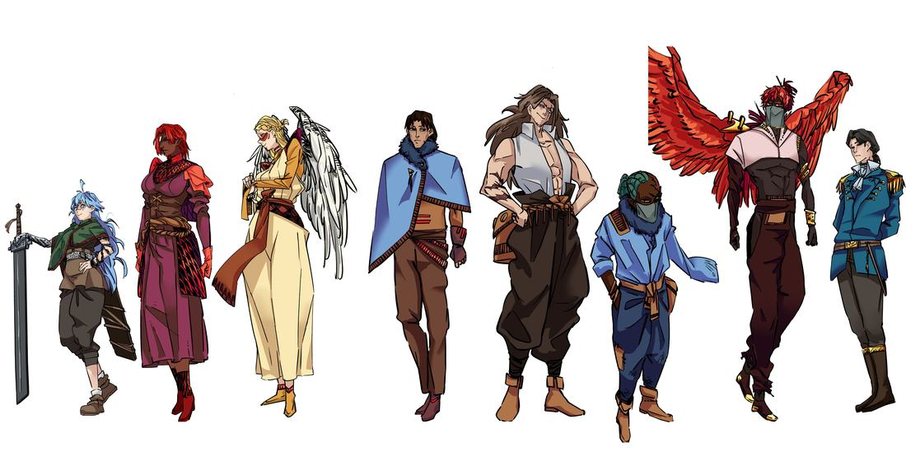
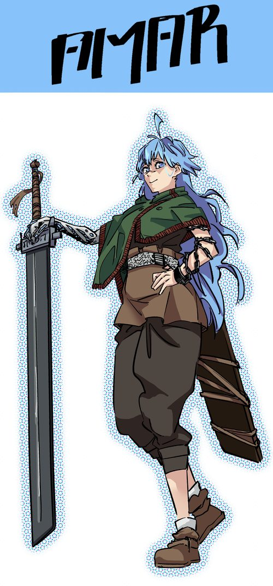
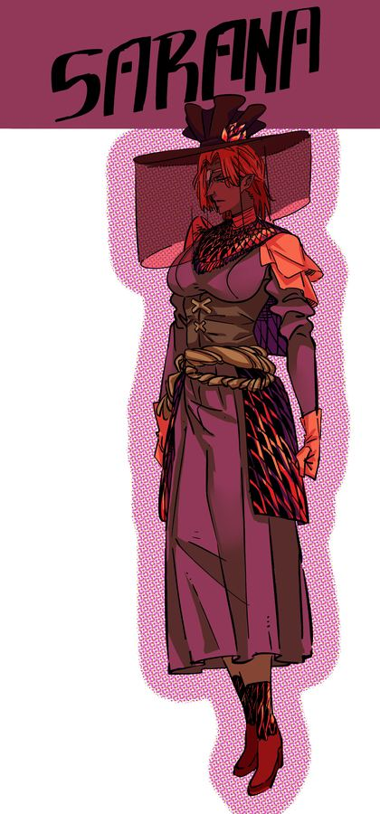
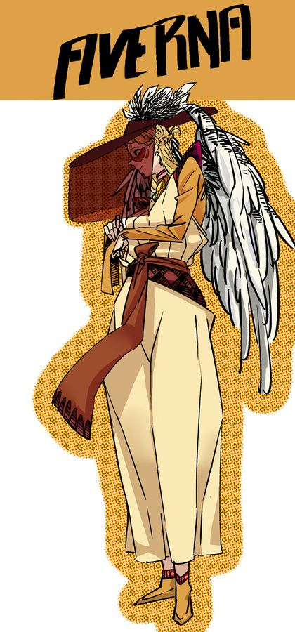
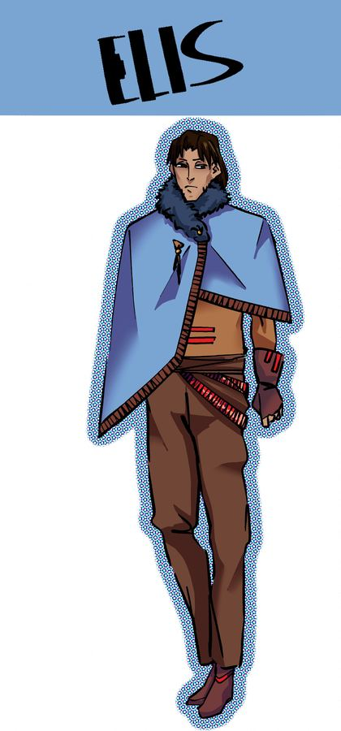
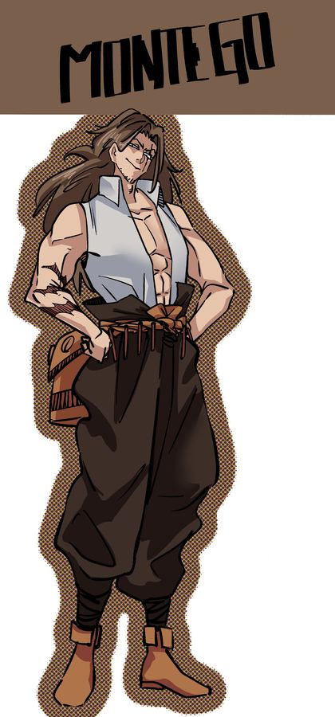
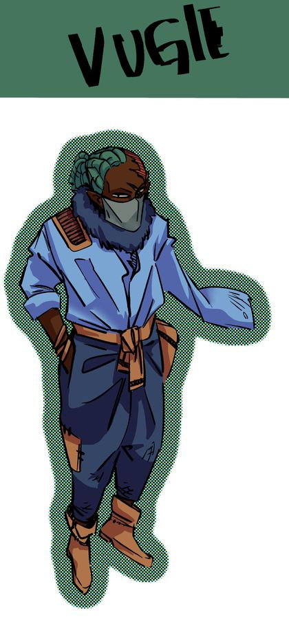
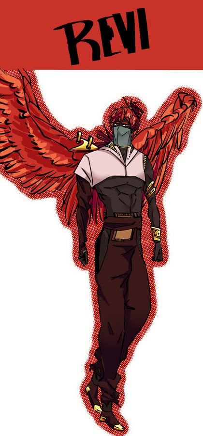
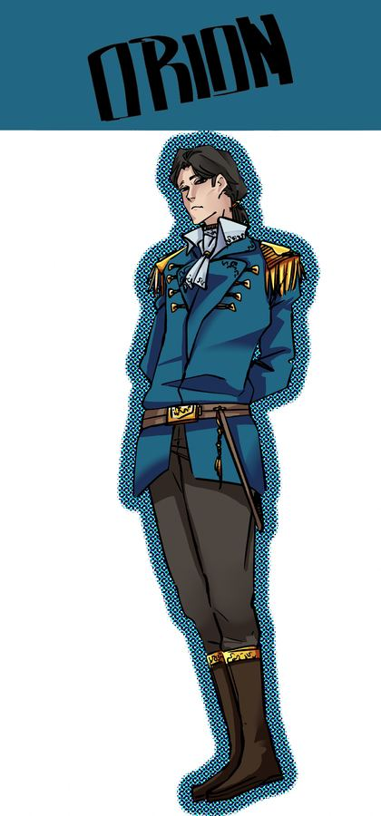
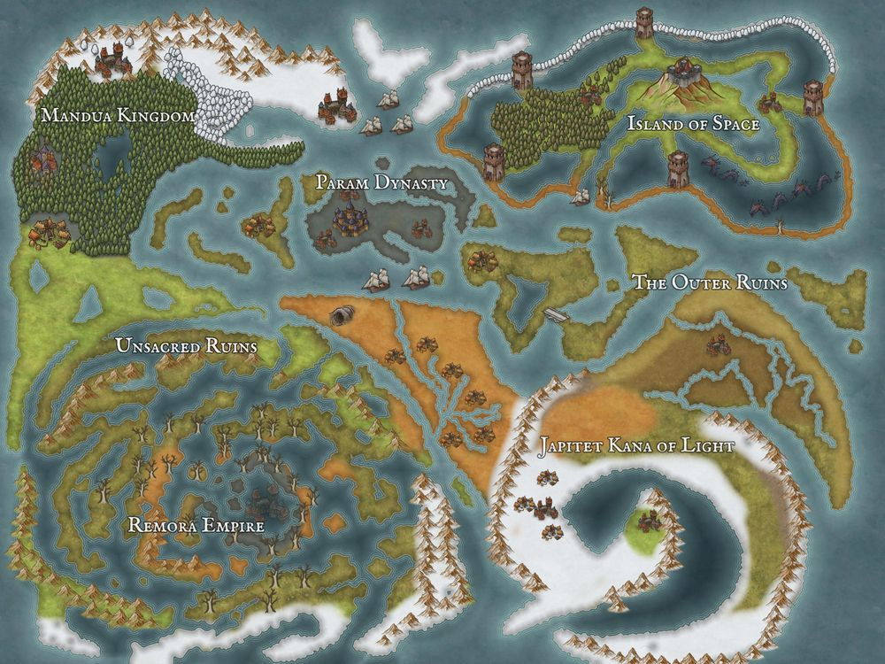

Industrial Engineering · Purdue University · West Lafayette, IN
he/him
Industrial Engineering · Purdue University · West Lafayette, IN
I'm an Industrial Engineering student at Purdue University focusing on data, interconnected systems, and creative problem-solving. During the first semester of my sophomore year, I joined a research group dedicated to mapping accessibility to essential services throughout the United States. I work under a graduate student who hopes to graduate by the end of Spring 2027, so by then I hope to have a new graduate student to work for, or possibly focus on some of my own research.
Outside the lab, I collect Magic: The Gathering cards, and write stories, focusing heavily on world building. The projects I am currently working on are Salem Mora, Mortal Ruins, and the Zombie 101 Universe.
My long-term goal is to help improve food distribution to low-access communities. World hunger currently isn't an issue of material but rather logistics. I hope to one day be able to play a part in food distribution and lower the amount of food wasted.
Type a card name to see if it's in the collection — including exact set, printing, and foil status.
Your entire collection is loaded — search any card instantly.









